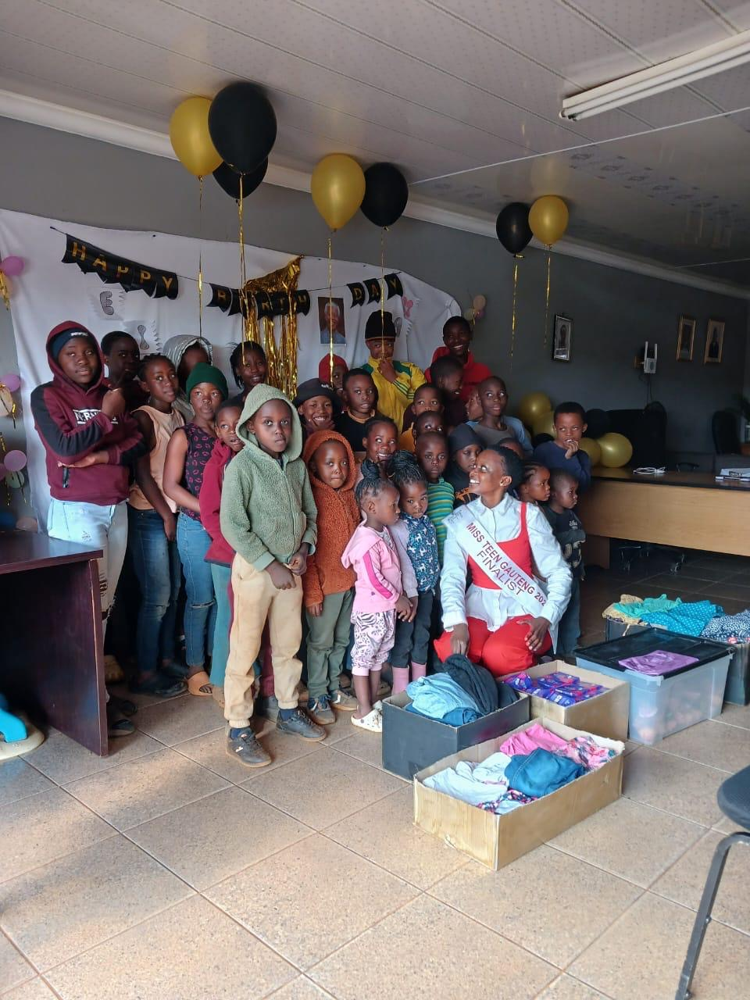
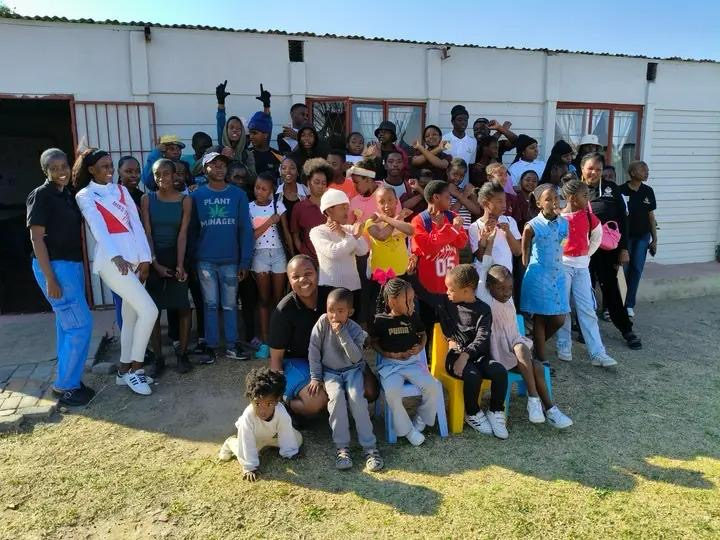
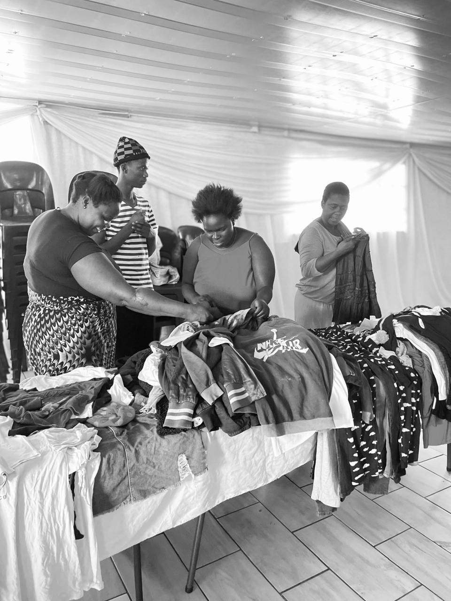
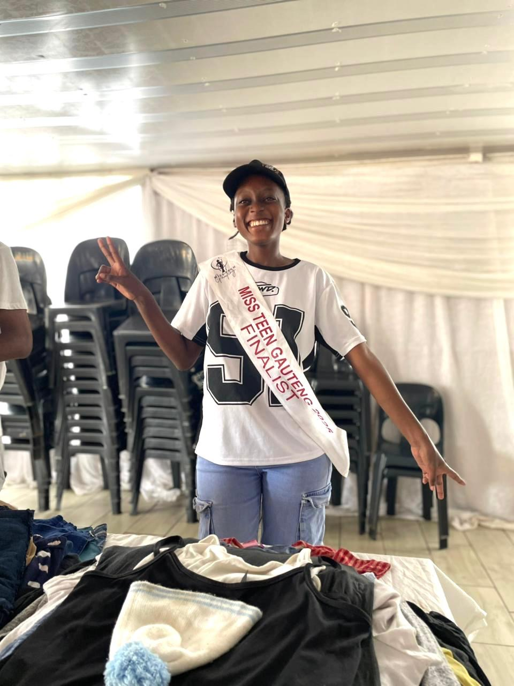

Our History
Courage To Rise Charity was started by a 19-year-old girl with a passion for helping others from Tembisa. At first, it began as an activity from a beauty pageant competition (Miss Teen Gauteng). As she completed it, she discovered that it was not just about the competition — it was about the deep connection with empowerment and giving back.
Lucia is a young girl who could not participate in some activities (school competitions and sports) simply because she was afraid of the unknown, failure, and judgment. Realising that most children from townships and rural areas live with that same fear and let it make decisions on their behalf, Lucia is becoming a voice that needs to be heard and is standing against fear.
She accomplishes this through educational programmes about fear and by making donations with the help of the community and MMR Bakery.

Our Mission
The aim is to build a society where every young person can thrive, free from limitations and fears, and be empowered to achieve their goals.
Our Vision
This charity empowers orphanages to develop self-empowerment and be proud of their beauty, because staying at a shelter does not limit your ambitions.
The most beautiful moments in our lives are those we cherish the most. Keep people who add value to your life and fill your cup with happiness.

Our Team
Meet the dedicated people behind Courage To Rise Charity.

